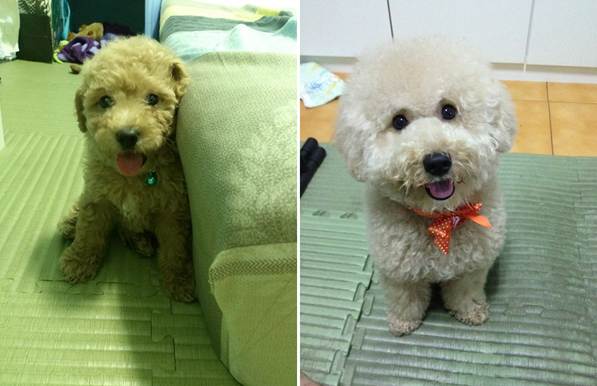
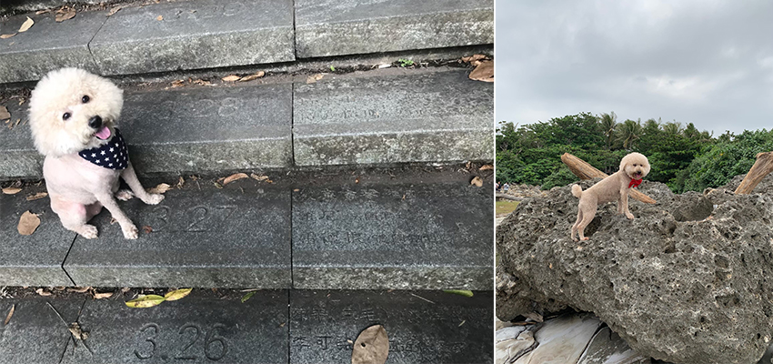
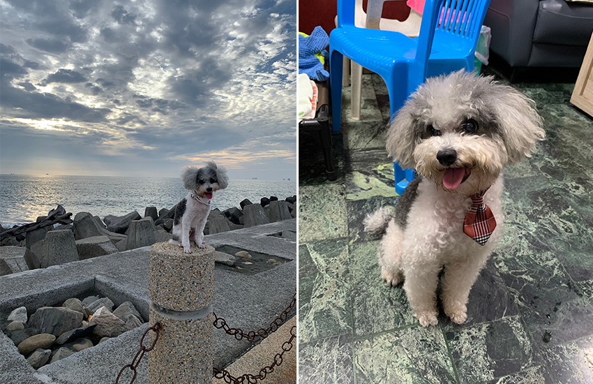
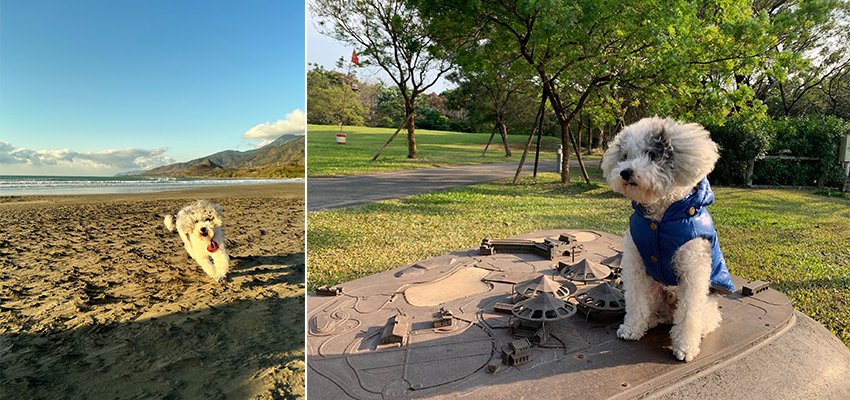
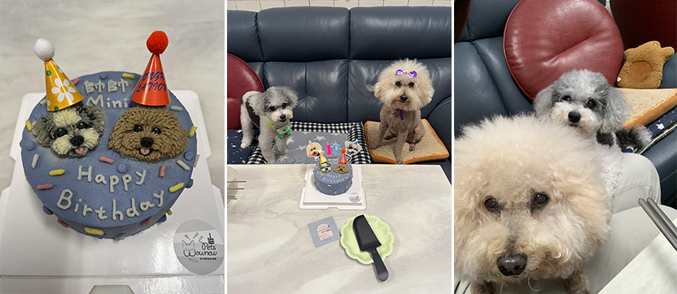

一生的承諾
歐怡伶│高雄歐美研發處＼高雄歐美軟體應用部
Mini是一隻出生幾個月後，就來到好人家裡生活的奶油貴賓，也是首隻成為家中一分子的毛小孩。有別於以往的養狗經驗：圈養在車庫、只吃飼料、洗澡在門外沖一沖後曬曬太陽…等等行為。Mini直接打破所有規矩：學會爬樓梯後，從在客廳活動到肆無忌憚的跟著去房間睡覺；現在則是直接睡在床上！為了健康著想，開始吃鮮食和保健品、每日點眼藥水及刷牙；洗澡更是專人服務一條龍，洗完擦乾後使用高級吹風機吹毛髮，吹乾後再理毛至蓬鬆，每個月還會定期送洗大修呢！
|  | |
| 剛出生的Mini | Mini一歲時 |
生活上更是養尊處優，外出肯定少不了她，餐廳、景點、大眾運輸及飯店，第一句話詢問的不外乎是：請問可以帶寵物嗎？最印象深刻的一件事是Mini兩歲時，兒童節連假出遊塞在車陣裡好幾個小時，好不容易抵達阿里山國家森林遊樂區，卻因禁止攜帶寵物被擋在園區外，無功而返僅拍張照留念再摸摸鼻子下山。
|  | |
| 四歲在自己的生日階梯上拍照 | 六歲去台東小野柳 |
帥帥就沒那麼幸運了…帥帥是從非法繁殖場救援出來的花貴賓，因為長期被關在籠子裡及殘暴的繁殖方式，身形明顯已經變形，活動方式也只會原地不停的轉圈…聲帶被割、瘦骨如柴加上滿口爛牙，讓人無法想像他從前遭受了什麼樣的對待。
所幸，在我們細心與充滿愛的照顧下，認養滿一年後的今天，已是隻健康又活潑的小寶貝！從尾巴總是下垂藏在兩腿之間，老是躲在角落發抖；現在會用力發出聲音，瘋狂搖尾巴的歡迎你歸來。走路也進步到可以走很長一段直線後，再以你為中心點繞圈。聰明機靈的他，常會觀察著Mimi的一舉一動，進而模仿與學習，像是該怎麼撒嬌、玩玩具、聽得懂簡單指令。
|  | |
| 西子灣看夕陽 | 這個笑容已足矣 |
|  | |
| 海口港沙灘 | 六堆客家文化園區 |
今年，Mini十歲了！帥帥也獲得重生一年了！在這特別的日子，準備了客製化寵物蛋糕為他們慶生，往後繼續跟著我們一起幸福的生活下去，再待好待滿下一個十年。
|  | ||
| 願你們未來的日子，狗生快樂。也希望其他飼主們能終養不棄養。 | ||